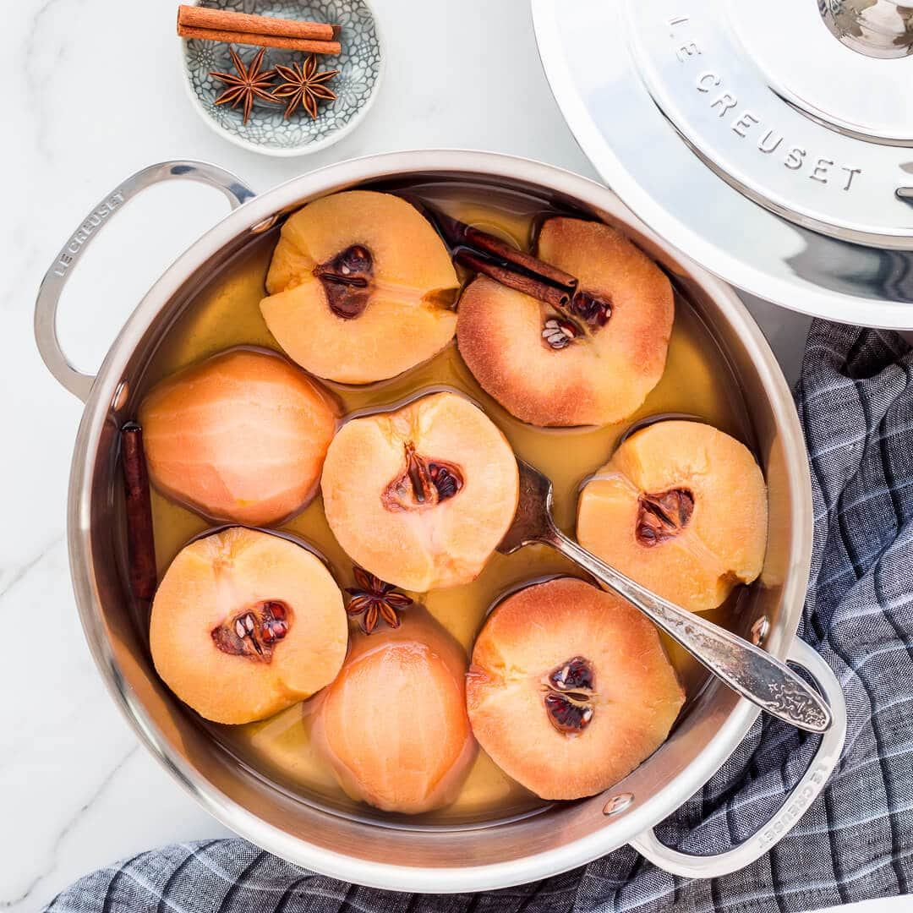

Back to Odin Recipe
Description
Poached quince is a delicious and simple recipe for when you want a pure quince desert without a lot of efford.

- Prep time: 15 min
- Cook time: 1 to 2 hours
Ingredients
- 900g water
- 225g sugar
- 1 vanilla bean, split lenghtwise with seeds scraped
- 1 cinnamon stick
- 2 lemons
- 4 medium quinces
Instructions
- Combine water, sugar, vanilla bean and seeds, and cinnamon in a medium saucepan.
- Bring it to a simmer over medium heat until the sugar dissolves and the syrup begins to bubble.
- Fill a medium bowl with cold water and add lemon juice.
- Peel and quarter the quinces. Drop them into lemon water (to stop them from oxidizing).
- Drain the quince pieces out of the lemon water.
- Place the quince into sugar syrup and leave on low simmer for an hour or two, until fork tender and rose in color.
- Let the quince cool completely in the poaching liquid.
- Remove the core and enjoy the dish.